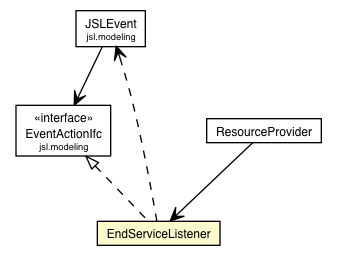

jsl.modeling.elements.resource
Class ResourceProvider.EndServiceListener

java.lang.Object
 jsl.modeling.elements.resource.ResourceProvider.EndServiceListener
jsl.modeling.elements.resource.ResourceProvider.EndServiceListener
- All Implemented Interfaces:
- EventActionIfc
- Enclosing class:
- ResourceProvider
class ResourceProvider.EndServiceListener
- extends Object
- implements EventActionIfc
|
Method Summary |
void |
action(JSLEvent event)
This must be implemented by any objects that want to supply event
logic. |
| Methods inherited from class java.lang.Object |
clone, equals, finalize, getClass, hashCode, notify, notifyAll, toString, wait, wait, wait |
ResourceProvider.EndServiceListener
ResourceProvider.EndServiceListener()
action
public void action(JSLEvent event)
- Description copied from interface:
EventActionIfc
- This must be implemented by any objects that want to supply event
logic. This is essentially the "event routine".
- Specified by:
action in interface EventActionIfc
- Parameters:
event - The event that triggered this action.
Copyright © 2012 Manuel D. Rossetti. All Rights Reserved.